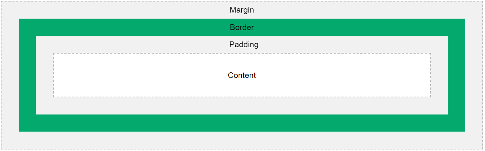

So, What is CSS?
CSS (Cascading Style Sheets) allows you to create great-looking web
pages, but how does it work under the hood? This article explains what
CSS is with a simple syntax example and also covers some key terms
about the language.
A document is usually a text file structured using a markup language — HTML is the most common markup language, but you may also come across other markup languages such as SVG or XML.
Presenting a document to a user means converting it into a form usable by your audience. Browsers, like Firefox, Chrome, or Edge , are designed to present documents visually, for example, on a computer screen, projector, or printer.
CSS is a rule-based language — you define the rules by specifying groups of styles that should be applied to particular elements or groups of elements on your web page.
For example, you can decide to have the main heading on your page to be shown as large red text. The following code shows a very simple CSS rule that would achieve the styling described above:
What is CSS for?
As we have mentioned before, CSS is a language for specifying how
documents are presented to users — how they are styled, laid out, etc.
A document is usually a text file structured using a markup language — HTML is the most common markup language, but you may also come across other markup languages such as SVG or XML.
Presenting a document to a user means converting it into a form usable by your audience. Browsers, like Firefox, Chrome, or Edge , are designed to present documents visually, for example, on a computer screen, projector, or printer.
Note: A browser is sometimes called a user agent, which basically means a computer program that represents
a person inside a computer system. Browsers are the main type of
user agents we think of when talking about CSS, however, they are not the only ones.
There are other user agents available,
such as those that convert HTML and CSS documents into PDFs to be printed.
CSS syntax
CSS is a rule-based language — you define the rules by specifying groups of styles that should be applied to particular elements or groups of elements on your web page.
For example, you can decide to have the main heading on your page to be shown as large red text. The following code shows a very simple CSS rule that would achieve the styling described above:
h1 {
color: red;
font-size: 5em;
}
h1 {
color: red;
font-size: 20px;
}
p {
color: black;
}
Note: You can find links to all the CSS property pages (along with other CSS features)
listed on the MDN CSS reference. Alternatively, you should get used to searching for
"mdn css-feature-name" in your favorite search engine whenever you need to find
out more information about a CSS feature. For example, try searching for
"mdn color" and "mdn font-size"!
SGML
The Standard Generalized Markup Language (SGML) is an ISO
specification for defining declarative markup languages.
On the web, HTML 4, XHTML, and XML are popular SGML-based languages. It is worth noting that since its fifth edition, HTML is no longer SGML-based and has its own parsing rules.
On the web, HTML 4, XHTML, and XML are popular SGML-based languages. It is worth noting that since its fifth edition, HTML is no longer SGML-based and has its own parsing rules.
integrate CSS on a web page
by Inline method - It is used to insert style sheets in HTML document
Embedded/Internal method - It is used to add a unique style to a single document
Linked/Imported/External method - It is used when you want to make changes on multiple pages.
advantages of CSS
Using CSS generated content:
This article describes some ways in which you can use CSS to add content when a document is displayed. You modify your stylesheet to add text content or images.
One of the important advantages of CSS is that it helps you to separate a document's style from its content. However, there are situations where it makes sense to specify certain content as part of the stylesheet, not as part of the document. You can specify text or image content within a stylesheet when that content is closely linked to the document's structure.
If you specify content in your stylesheet that requires translation, you have to put those parts of your stylesheet in different files and arrange for them to be linked with the appropriate language versions of your document.
The character set of a stylesheet is UTF-8 by default, but it can also be specified in the link, in the stylesheet
itself, or in other ways. For details, see 4.4 CSS style sheet representation in the CSS Specification.
Individual characters can also be specified by an escape mechanism that uses backslash as the escape character.
For example, "\265B" is the chess symbol for a black queen ♛. For details,
see Referring to characters not represented in a character encoding and Characters and case in the CSS Specification.
This article describes some ways in which you can use CSS to add content when a document is displayed. You modify your stylesheet to add text content or images.
One of the important advantages of CSS is that it helps you to separate a document's style from its content. However, there are situations where it makes sense to specify certain content as part of the stylesheet, not as part of the document. You can specify text or image content within a stylesheet when that content is closely linked to the document's structure.
Note: Content specified in a stylesheet does not become part of the DOM.
Specifying content in a stylesheet can cause complications.
For example, you might have different language versions of your document that share a stylesheet. If you specify content in your stylesheet that requires translation, you have to put those parts of your stylesheet in different files and arrange for them to be linked with the appropriate language versions of your document.
Examples:
HTML
A text where I need to
<span class="ref">
something<span>
Css
.ref::before {
font-weight: bold;
color: navy;
content: "Reference ";
}
Output
A text where I need to Reference something
The character set of a stylesheet is UTF-8 by default, but it can also be specified in the link, in the stylesheet
itself, or in other ways. For details, see 4.4 CSS style sheet representation in the CSS Specification.
Individual characters can also be specified by an escape mechanism that uses backslash as the escape character.
For example, "\265B" is the chess symbol for a black queen ♛. For details,
see Referring to characters not represented in a character encoding and Characters and case in the CSS Specification.
This rule adds a space and an icon after every link that has the class glossary:
HTML
<a href="developer.mozilla.org" class="glossary">
</a>
Css
a.glossary::after {
content:" ",
url("glossary-icon.gif");
}
limitations of CSS such
There are several limitations of CSS such as:
CSS can’t fulfill turning completeness hence, it can never perform logical like ‘if/else’, for/while,
etc, or arithmetical tasks
One cannot read files using CSS
It cannot provide total control over document display and allows the contents of the page to
come through whatever the browser is used.
Ascending by selectors is not possible
Limitations of vertical control
No expressions as it is a text-based coding language
No column declaration
Pseudo-class not controlled by dynamic behavior
Rules, styles, targeting specific text not possible
CSS can’t fulfill turning completeness hence, it can never perform logical like ‘if/else’, for/while,
etc, or arithmetical tasks
One cannot read files using CSS
It cannot provide total control over document display and allows the contents of the page to
come through whatever the browser is used.
Ascending by selectors is not possible
Limitations of vertical control
No expressions as it is a text-based coding language
No column declaration
Pseudo-class not controlled by dynamic behavior
Rules, styles, targeting specific text not possible
CSS Framework
A CSS framework is a prepped and ready-to-use CSS library (Cascading Style Sheets).
The stylesheets collection makes the job of a UI developer easier.
Rather than starting every project from scratch, a CSS framework gives them tools to quickly create a user interface that they repeat and tweak during a project.
They also enable the creation of more standards-compliant websites.
While quite challenging to use or ambiguous for beginners, senior developers who know the CSS framework sites’ descriptions and buzzwords find them extremely useful.
Rather than starting every project from scratch, a CSS framework gives them tools to quickly create a user interface that they repeat and tweak during a project.
They also enable the creation of more standards-compliant websites.
While quite challenging to use or ambiguous for beginners, senior developers who know the CSS framework sites’ descriptions and buzzwords find them extremely useful.
| CSS Frameworks | ||||
| 1. Bootstrap | 2. Tailwind CSS | 3. Foundation | 4. Bulma | 5. Skeleton |
inherited property
In CSS, inheritance controls what happens when no value is specified for a property on an element.
CSS properties can be categorized in two types:
inherited properties, which by default are set to the computed value of the parent element.
non-inherited properties, which by default are set to initial value of the property.
Examples
CSS properties can be categorized in two types:
inherited properties, which by default are set to the computed value of the parent element.
non-inherited properties, which by default are set to initial value of the property.
Examples
p { color: green; }
<p>
This paragraph has
<em>emphasized text</em>
in it.
</p>
Color is an inherited property while the background is not. So this can make confusion further.
You can control inheritance for all properties at once using the all shorthand property,
which applies its value to all properties. For example:
p {
all: revert;
font-size: 200%;
font-weight: bold;
}
Embedded Style Sheet
Embedded style sheets allow you to define styles for the whole HTML document in one place.
Embedded style sheets refer to when you embed style sheet information into an HTML document using the <style> element. You do this by
embedding the style sheet information within <style></style> tags in the head of your document.
Syntax:
Embedded style sheets refer to when you embed style sheet information into an HTML document using the <style> element. You do this by
embedding the style sheet information within <style></style> tags in the head of your document.
Syntax:
<style>
p {
font-family: georgia, serif;
font-size: x-small;
}
hr {
color: #ff9900;
height: 1px;
}
a:hover {
color: #ff0000;
text-decoration: none;
}
</style>
CSS selector
Universal selectors
The CSS universal selector (*) matches elements of any type.
Css:
The CSS class selector matches elements based on the contents of their class attribute.
Syntax
Css:
ID selectors
The CSS ID selector matches an element based on the value of the element's id attribute. In order for the element to be selected, its id attribute must match exactly the value given in the selector.
Css:
Result
The CSS universal selector (*) matches elements of any type.
/* Selects all elements */
* {
color: green;
}
Examples:
* [lang^=en] {
color: green;
}
*.warning {
color: red;
}
*#maincontent {
border: 1px solid blue;
}
.floating {
float: left
}
/*
automatically clear
the next sibling after a
floating element
*/
.floating + * {
clear: left;
}
Type selectors:
The CSS type selector matches elements by node name.
In other words, it selects all elements of the given type within a document.
/* All elements. */
a {
color: red;
}
Css:
span {
background-color: red;
}
<span>
Here's a span with some text.
</span>
<p>
Here's a p with some text.
</p>
<span>
Here's a span with more text.
</span>
Here's a span with some text.
Class selectors:
Here's a p with some text.
Here's a span with more text.The CSS class selector matches elements based on the contents of their class attribute.
/* All elements with class="spacious" */
.spacious {
margin: 2em;
}
/* All <li>
elements with class="spacious" */
li.spacious {
margin: 2em;
}
/* All <li>
elements with a class list that includes both
"spacious" and "elegant" */
/* For example, class="elegant retro spacious" */
li.spacious.elegant {
margin: 2em;
}
Syntax
.class_name { style properties }Css:
.red {
color: #f33;
}
.yellow-bg {
background: #ffa;
}
.fancy {
font-weight: bold;
text-shadow: 4px 4px 3px #77f;
}
<p class="red">This paragraph has red text.</p>
<p class="red yellow-bg">This paragraph has red text and a yellow background.</p>
<p class="red fancy">This paragraph has red text and "fancy" styling.</p>
<p>This is just a regular paragraph.</p>
This paragraph has red text.
This paragraph has red text and a yellow background.
This paragraph has red text and "fancy" styling.
This is just a regular paragraph.
The CSS ID selector matches an element based on the value of the element's id attribute. In order for the element to be selected, its id attribute must match exactly the value given in the selector.
/* The element with id="demo" */
#demo {
border: red 2px solid;
}
#id_value { style properties }Css:
#identified {
background-color: blue; color: white;
}<div id="identified">This div has a special ID on it!</div>
<div>This is just a regular div.'</div>This div has a special ID on it!
This is just a regular div.
| Chrome | Edge | Safari Mini | Firefox | Opera | IE |
| Support | Support | Support | Support | Support | Support |
Opacity CSS Property
The opacity CSS property sets the opacity of an element.
Opacity is the degree to which content behind an element is hidden, and is the opposite of transparency.
HTML
CSS
Setting opacity on hover
In the following example opacity is changed on hover, so the striped background image on the parent element shows through the image.
HTML
Css

Examples:
Setting opacity
The following example demonstrates how the opacity property changes the opacity
of the entire element and content, thus making the text very hard to read.
HTML
<div class="light">You can barely see this.</div>
<div class="medium">This is easier to see.</div>
<div class="heavy">This is very easy to see.</div>CSS
div {
background-color: yellow;
font-weight: bold;
font-size: 130%;
}
.light {
opacity: 0.2;
/* Barely see the text over the background */
}
.medium {
opacity: 0.5;
/* See the text more clearly over the background */
}
.heavy {
opacity: 0.9;
/* See the text very clearly over the background */
}You can barely see this.
This is easier to see.
This is very easy to see.
In the following example opacity is changed on hover, so the striped background image on the parent element shows through the image.
HTML
<div class="wrapper">
<img src="//interactive-examples
.mdn.mozilla.net/media/dino.svg"
alt="MDN Dino" width="128" height="146"
class="opacity">
</div>
img.opacity {
opacity: 1;
}
img.opacity:hover {
opacity: 0.5;
}
.wrapper {
width: 200px;
height: 160px;
background-color: #f03cc3;
background-image:
linear-gradient(90deg,
transparent 50%,
rgba(255,255,255,.5) 50%);
background-size: 20px 20px;
}

| Chrome | Edge | Safari Mini | Firefox | Opera | IE |
| Support | Support | Not Support | Support | Support | Support |
The difference between class selectors and id selectors
The Main difference between ID and class selectors is ID selectors are unique to each of the element on a webpage whereas Class selectors
don't have to be unique. To be clear using ID selectors we can apply styling to a single element with that particular ID.
Using class selectors we can apply styling to multiple elements on a page.
ID's are unique
Each element can have only one ID Each page can have only one element with that ID When I was first learning this stuff, I heard over and over that you should only use ID's once, but you can use classes over and over. It basically went in one ear and out the other because it sounded more like a good "rule of thumb" to me rather than something extremely important. If you are purely an HTML/CSS person, this attitude can persist because to you, they really don't seem to do anything different.
Here is one: your code will not pass validation if you use the same ID on more than one element. Validation should be important to all of us, so that alone is a big one. We'll go over more reasons for uniqueness as we go on.
Classes are NOT unique
You can use the same class on multiple elements. You can use multiple classes on the same element. Any styling information that needs to be applied to multiple objects on a page should be done with a class. Take for example a page with multiple "widgets":
<div class="widget"></div> <div class="widget"></div> <div class="widget"></div> You can now use the class name "widget" as your hook to apply the same set of styling to each one of these. But what if you need one of them to be bigger than the other, but still share all the other attributes? Classes has you covered there, as you can apply more than one class:
<div class="widget"></div> <div class="widget big"></div> <div class="widget"></div> No need to make a brand new class name here, just apply a new class right in the class attribute. These classes are space delimited and most browsers support any number of them (actually, it's more like thousands, but way more than you'll ever need).
There are no browser defaults for any ID or Class
Adding a class name or ID to an element does nothing to that element by default.
This is something that snagged me as a beginner. You are working on one site and figure out that applyin g a particular class name fixes a problem you are having. Then you jump over to another site with the same problem and try to fix it with that same class name thinking the class name itself has some magical property to it only to find out it didn't work.
Classes and ID's don't have any styling information to them all by themselves. They require CSS to target them and apply styling. ID's have special browser functionality
Classes have no special abilities in the browser, but ID's do have one very important trick up their sleeve. This is the "hash value" in the URL. If you have a URL like http://yourdomain.com#comments, the browser will attempt to locate the element with an ID of "comments" and will automatically scroll the page to show that element. It is important to note here that the browser will scroll whatever element it needs to in order to show that element, so if you did something special like a scrollable DIV area within your regular body, that div will be scrolled too.
This is an important reason right here why having ID's be absolutely unique is important. So your browser knows where to scroll!
Elements can have BOTH
There is nothing stopping you from having both an ID and a Class on a single element. In fact, it is often a very good idea. Take for example the default markup for a WordPress comment list item:
It has a class applied to it that you may want for styling all comments on the page, but it also has a unique ID value (dynamically
Each element can have only one ID Each page can have only one element with that ID When I was first learning this stuff, I heard over and over that you should only use ID's once, but you can use classes over and over. It basically went in one ear and out the other because it sounded more like a good "rule of thumb" to me rather than something extremely important. If you are purely an HTML/CSS person, this attitude can persist because to you, they really don't seem to do anything different.
Here is one: your code will not pass validation if you use the same ID on more than one element. Validation should be important to all of us, so that alone is a big one. We'll go over more reasons for uniqueness as we go on.
Classes are NOT unique
You can use the same class on multiple elements. You can use multiple classes on the same element. Any styling information that needs to be applied to multiple objects on a page should be done with a class. Take for example a page with multiple "widgets":
<div class="widget"></div> <div class="widget"></div> <div class="widget"></div> You can now use the class name "widget" as your hook to apply the same set of styling to each one of these. But what if you need one of them to be bigger than the other, but still share all the other attributes? Classes has you covered there, as you can apply more than one class:
<div class="widget"></div> <div class="widget big"></div> <div class="widget"></div> No need to make a brand new class name here, just apply a new class right in the class attribute. These classes are space delimited and most browsers support any number of them (actually, it's more like thousands, but way more than you'll ever need).
There are no browser defaults for any ID or Class
Adding a class name or ID to an element does nothing to that element by default.
This is something that snagged me as a beginner. You are working on one site and figure out that applyin g a particular class name fixes a problem you are having. Then you jump over to another site with the same problem and try to fix it with that same class name thinking the class name itself has some magical property to it only to find out it didn't work.
Classes and ID's don't have any styling information to them all by themselves. They require CSS to target them and apply styling. ID's have special browser functionality
Classes have no special abilities in the browser, but ID's do have one very important trick up their sleeve. This is the "hash value" in the URL. If you have a URL like http://yourdomain.com#comments, the browser will attempt to locate the element with an ID of "comments" and will automatically scroll the page to show that element. It is important to note here that the browser will scroll whatever element it needs to in order to show that element, so if you did something special like a scrollable DIV area within your regular body, that div will be scrolled too.
This is an important reason right here why having ID's be absolutely unique is important. So your browser knows where to scroll!
Elements can have BOTH
There is nothing stopping you from having both an ID and a Class on a single element. In fact, it is often a very good idea. Take for example the default markup for a WordPress comment list item:
What About RWD
RWD stands for Responsive Web Design.
In the early days of web design, pages were built to target a particular screen size. If the user had a larger or smaller screen than the designer expected, results ranged from unwanted scrollbars to overly long line lengths, and poor use of space. As more diverse screen sizes became available, the concept of responsive web design (RWD) appeared, a set of practices that allows web pages to alter their layout and appearance to suit different screen widths, resolutions, etc. It is an idea that changed the way we design for a multi-device web, and in this article, we'll help you understand the main techniques you need to know to master it.
Note: See this simple liquid layout: example, source code. When viewing the example, drag your browser window in and out to see how this looks at different sizes.
Syntax:
Note: See this simple fixed-width layout: example, source code. Again, observe the result as you change the browser window size.
Note: The screenshots above are taken using the Responsive Design Mode in Firefox DevTools.
html {
font-size: 1em;
}
h1 {
font-size: 2rem;
}
@media (min-width: 1200px) {
h1 {
font-size: 4rem;
}
}
Differences between Logical & Physical Tags:
| Logical tags | Physical tags |
| 1: Logical tags describe the behaviour, nature of content for the text enclosed inside the tag. They represent the function of text on the page. | 2: Physical tags are used to decide the appearance of the text and do not provide any information about the text. |
| 1: It carries certain obligations. | 2: It is extremely straightforward. |
| 1: It is used to mention visually impaired texts. | 2: It is used to indicate the specific characters which need formation. |
| 1: Here, the pages are more accessible. | 2: Page accessibility is comparatively low. |
| 1: It supports the latest technology. | 2: This concept is dependent upon weak tools. |
| 1: Logical tags are used to provide information by giving the special importance to the text. For instance, <em> tag is used to emphasize the text by representing it in italic format. | 2: Physical tags are used to style the content only. For instance, <i> is used to display the text in italic format. |
CSS Box model and what are its elements?
The CSS Box Model
In CSS, the term "box model" is used when talking about design and layout.
The CSS box model is essentially a box that wraps around every HTML element. It consists of: margins, borders, padding, and the actual content. The image below illustrates the box model:
Exmaple:
Content- The content of the box, where text and images appear
Padding- Clears an area around the content. The padding is transparent
Border - A border that goes around the padding and content
Margin - Clears an area outside the border. The margin is transparent
In CSS, the term "box model" is used when talking about design and layout.
The CSS box model is essentially a box that wraps around every HTML element. It consists of: margins, borders, padding, and the actual content. The image below illustrates the box model:
Exmaple:

Content- The content of the box, where text and images appear
Padding- Clears an area around the content. The padding is transparent
Border - A border that goes around the padding and content
Margin - Clears an area outside the border. The margin is transparent
div {
width: 300px;
border: 15px solid green;
padding: 50px;
margin: 20px;
}Float Property Of CSS?
The float CSS property places an element on the left or right side of its container,
allowing text and inline elements to wrap around it.
The element is removed from the normal flow of the page,
though still remaining a part of the flow (in contrast to absolute positioning).
Value
Value
| Specified value | Computed value |
| 1: inline | 2: Block |
| 1: inline-block | 2: Block |
| 1: inline-table | 2: Block |
| 1: table-row | 2: Block |
| 1: table-row-group | 2: Block |
| 1: table-column | 2: Block |
| 1: table-column-group | 2: Block |
| 1: table-cell | 2: Block |
| 1: table-caption | 2: Block |
| 1: table-header-group | 2: Block |
| 1: table-footer-group | 2: Block |
| 1: inline-flex | 2: flex |
| 1: inline-grid | 2: grid |
| 1: other | 2: unchanged |
Note: If you're referring to this property from JavaScript as a member of the HTMLElement.style object, modern browsers support float, but in older browsers you have to spell it as cssFloat, with Internet Explorer versions 8 and older using styleFloat. This was an exception to the rule, that the name of the DOM member is the camel-case name of the dash-separated CSS name (because "float" is a reserved word in JavaScript, as seen in the need to escape "class" as "className" and escape <label>'s "for" as "htmlFor").
CSS: Reset, Default Values
You can reset CSS values to its default.
Set all CSS properties to browser's default. Supported by all browsers as of 2020-11. But was not supported by Google Chrome as of 2020-03.
Set all CSS properties to CSS's initial value for this property. For each CSS property, the CSS spec defines a initial value. For example, initial value of display is inline, for all HTML elements, including div. Note: this value is NOT useful.
Set all CSS properties to inherit from parent HTML element's CSS value.
Set it to inherit if it does inherit, else set it to initial value.
Examples:
All: Revert
Set all CSS properties to browser's default. Supported by all browsers as of 2020-11. But was not supported by Google Chrome as of 2020-03.
All: Initial
Set all CSS properties to CSS's initial value for this property. For each CSS property, the CSS spec defines a initial value. For example, initial value of display is inline, for all HTML elements, including div. Note: this value is NOT useful.
All: inherit
Set all CSS properties to inherit from parent HTML element's CSS value.
All: Unset
Set it to inherit if it does inherit, else set it to initial value.
Examples:
* {all: revert}
div {all: revert}
purpose of the z-index and how is it used
The z-index CSS property sets the z-order of a positioned element and its descendants or flex items.
Overlapping elements with a larger z-index cover those with a smaller one.
Syntax:
HTML
Syntax:
/* Keyword value */
z-index: auto;
/* <integer> values */
z-index: 0;
z-index: 3;
z-index: 289;
z-index: -1; /*
Negative values to lower
the priority
*/
/* Global values */
z-index: inherit;
z-index: initial;
z-index: revert;
z-index: revert-layer;
z-index: unset;
HTML
<div class="wrapper">
<div class="dashed-box">
Dashed box
</div>
<div> class="gold-box"<
Gold bo
x</div>
<div class="green-box">
Green box
</div>
</div>
.wrapper {
position: relative;
}
.dashed-box {
position: relative;
z-index: 1;
border: dashed;
height: 8em;
margin-bottom: 1em;
margin-top: 2em;
}
.gold-box {
position: absolute;
background: gold;
width: 80%;
left: 60px;
top: 3em;
}
.green-box {
position: absolute;
z-index: 2; /*
put .green-box above .dashed-box
*/
background: lightgreen;
width: 20%;
left: 65%;
top: -25px;
height: 7em;
opacity: 0.9;
}Dashed box
Gold box
Green box